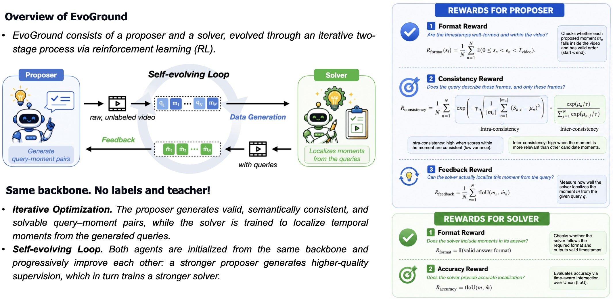

Overview

Video temporal grounding (VTG) takes an untrimmed video and a natural-language query as input and localizes the temporal moment that best matches the query. Existing methods rely on large, task-specific datasets requiring costly manual annotation. We introduce EvoGround, a framework of two coupled self-evolving agents, a proposer and a solver, that learn temporal grounding from raw videos without any human-labeled data. The proposer generates query--moment pairs from raw videos, while the solver learns to ground them and feeds back signals that improve the proposer in return. Through this self-reinforcing reinforcement-learning loop, the two agents are initialized from the same backbone and mutually improve across iterations. Trained on 2.5K unlabeled videos, EvoGround matches or surpasses fully supervised models across multiple VTG benchmarks, while emerging as a state-of-the-art fine-grained video captioner without manual labels.


EvoGround consists of two agents: a proposer and a solver. The proposer identifies candidate temporal events from raw videos and generates corresponding query–moment pairs, while the solver learns to ground temporal moments using the generated data. Both agents are initialized from the same backbone and evolve through a self-reinforcing loop without any manual labels.
The proposer is guided by three reward criteria: validity (format reward), consistency (consistency reward), and solvability (feedback reward). The consistency reward measures intra-consistency — how coherently a query aligns with frames within its moment — and inter-consistency — how discriminatively the query matches its own moment relative to others. The feedback reward uses the solver's accuracy (measured by timestamp-aware IoU) as a signal of whether generated pairs are learnable.
The solver is trained on proposer-generated query–moment pairs using a format reward and an accuracy reward (tIoU). EvoGround adopts GDPO as its RL optimizer and a curriculum design that progressively increases the solvability threshold across iterations, shifting focus from coarse matches toward more precise temporal alignments.
Despite never seeing any manual annotations, EvoGround matches or outperforms existing models, which rely on manually labeled data, across multiple benchmarks.
Charades-STA & ActivityNet-Captions (Grounding)
TVGBench & ReXTime (Grounding)
TemporalBench (Captioning)
Reward dynamics across iterations. As the proposer evolves over iterations, the solver correspondingly demonstrates progressively higher accuracy.

Improvements across iterations. GDPO consistently outperforms GRPO. Increasing the solvability threshold δ improves performance on longer videos and moments.

Data distributions across reward configurations. Each reward shapes the generated data differently — the consistency reward produces tighter moments, while the feedback reward enriches query descriptiveness.


EvoGround generates detailed, temporally-grounded descriptions of video content. The proposer produces event-level captions that accurately capture the sequence of actions and participants, closely matching the ground-truth despite receiving no caption supervision.
@article{jung2026evoground,
title={EvoGround: Self-Evolving Video Agents for Video Temporal Grounding},
author={Jung, Minjoon and Zhang, Byoung-Tak and Torresani, Lorenzo},
journal={arXiv preprint arXiv:2605.13803},
year={2026}
}